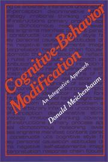

Cognitive-Behavior Modification: An Integrative Approach
Book·Donald Meichenbaum, 1977·认知行为矫正

Meichenbaum combines behavioral techniques with changes in self-talk. It marks the integration of cognitive behavioral therapy.
- Author
- Donald Meichenbaum
- Year
- 1977
- Difficulty
- Advanced
- Kind
- Practice
- Schools
- Cognitive-Behavioral Therapy
- Core theories
- Cognitive-Behavior Modification
Editions
- English edition Cognitive-Behavior Modification: An Integrative Approach Donald Meichenbaum · Plenum Press, first edition · 1977 Open Library ↗